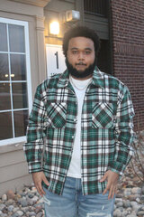

My name is Carlos Russell and I am a creator for the brand Three Two Clothing, also known as Thirty Two Clothing. My main goal in life is to be as successful as possible, no matter what it takes. My parents have always stressed to me that if youre comfortable in what youre doing then you arent doing it right, theres always a way to better yourself. A big thing for me recently is growth and being apart of COMARTSCI major has helped me grow in an educational way. Growing up the way I did, on the west side of Detroit, I didn't have as much as the other kids who went to my school or that I played with in the neighborhood. So that gave me the fuel to want to do my best in school to get what I want once I was on my own.